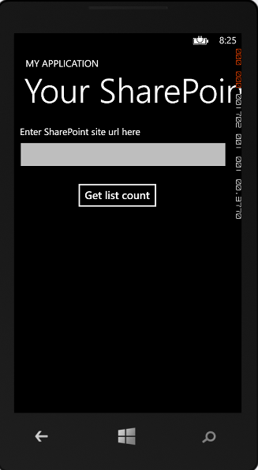
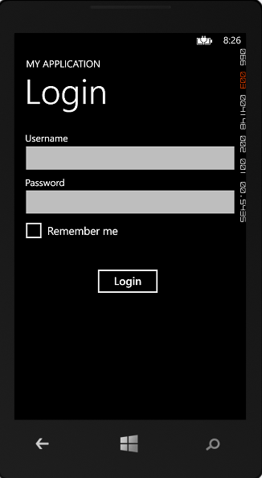

The Microsoft SharePoint SDK for Windows Phone 8 introduces support for NTLM.
Description of the sample
The solution is based on the Windows Phone Empty SharePoint Application template provided by Visual Studio Express 2012. It demonstrates how to create a custom logon page on Windows Phone 8 to authenticate against SharePoint 2013 by using NTLM. A custom logon page enables a user to enter the URL of a SharePoint site and user credentials through the Windows Phone 8 app.
Prerequisites
This sample requires the following:
-
Visual Studio Express 2012
-
Microsoft SharePoint SDK for Windows Phone 8
Windows Phone 8 Emulator requires the following:
-
Windows 8 Pro
-
A processor that supports Second Level Address Translation (SLAT)
Note If your computer meets the hardware and operating-system requirements but does not meet the requirements for the Windows Phone 8 Emulator, the Windows Phone SDK 8.0 will install and run. However, the Windows Phone 8 Emulator will not function and you will not be able to deploy or test apps on the Windows Phone 8 Emulator.
Key components of the sample
The sample contains the following:
-
CustomLoginPage.xaml is the custom login page; CustomLoginPage.xaml.cs is the code-behind file.
-
Constant.cs contains constants used throughout the sample.
Configure the sample
To configure the sample, use Visual Studio Express 2012 to open NTLMSampleCode.sln.
Run and test the sample
To run and test the sample, choose the F5 key. Figure 1 shows the initial screen.

After entering a URL, the user can provide credentials, as shown in Figure 2.

Change log
|
Version |
Date |
|---|---|
|
First version |
April 9, 2013 |